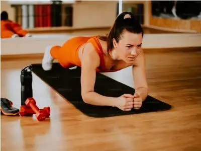
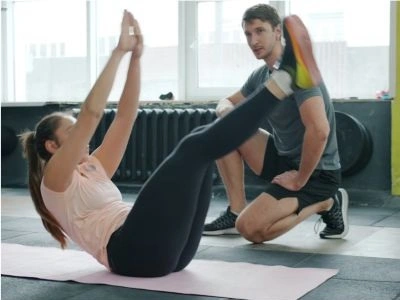
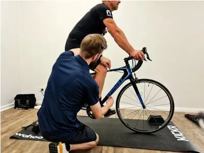
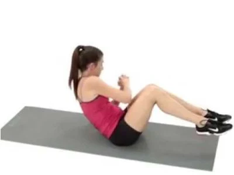
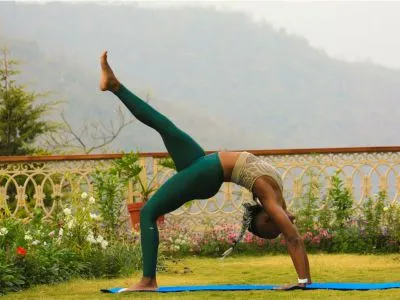

Core Workout
Build a strong, stable core for better posture and functional fitness
Personalized Notes
Track your modifications and progress by adding notes to your core exercises.
1. Plank
A fundamental isometric core exercise that builds endurance and stability in your entire core.
Sets & Duration: 3 sets × 45-60 seconds
Tips: Keep your body in a straight line, engage your core, and avoid letting your hips sag.
2. Crunches
An isolation exercise that targets the rectus abdominis, the front of your core muscles.
Sets & Reps: 3 sets × 15 reps
Tips: Keep your hands behind your head, lift your shoulders off the ground, and control the descent.
3. Bicycle Crunches
A dynamic core exercise that engages both the rectus abdominis and obliques for comprehensive core development.
Sets & Reps: 3 sets × 20 reps (10 per side)
Tips: Move with control, bring your elbow toward the opposite knee, and maintain steady breathing.
4. Russian Twists
An oblique-focused exercise that improves rotational strength and core stability.
Sets & Reps: 3 sets × 20 reps (10 per side)
Tips: Sit at a 45-degree angle, rotate from your core, and keep your chest up throughout the movement.
5. Leg Raises
An advanced core exercise that targets the lower abdominals and hip flexors while building strength.
Sets & Reps: 3 sets × 12 reps
Tips: Keep your lower back pressed to the ground, raise your legs slowly, and control the descent.
3. Bicycle Crunches
A dynamic core exercise that engages both the rectus abdominis and obliques for comprehensive core development.
Sets & Reps: 3 sets × 20 reps (10 per side)
Tips: Move with control, bring your elbow toward the opposite knee, and maintain steady breathing.
Core Workout Tips
- Rest 30-45 seconds between sets for core exercises
- Focus on mind-muscle connection and proper form
- Engage your core throughout the entire day, not just during workouts
- Combine core exercises with compound movements for maximum benefit
- Progress by increasing duration or adding resistance gradually
- A strong core improves posture, reduces back pain, and enhances athletic performance